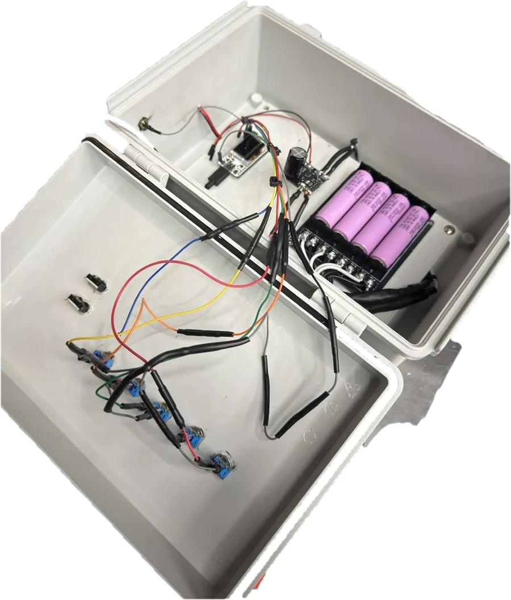
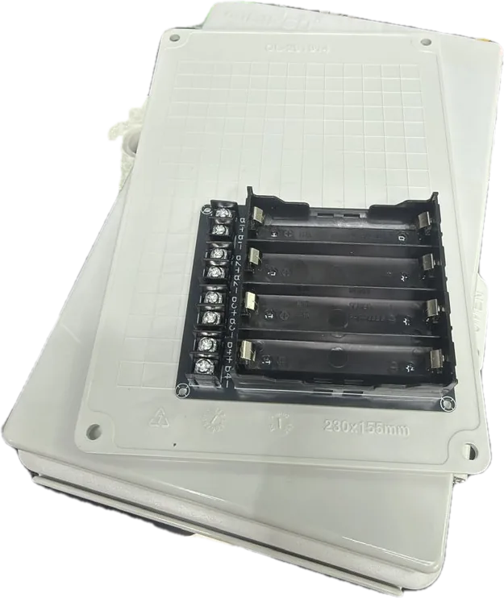

- One box on the wall.Solar-charged, and in place before it is needed.
- Five switches. One for each need.Water, medical, food, blankets, fuel. Up means needed.
- One knob for how many people.Eleven positions, from nobody to 100 or more.
- It confirms.The status light glows and the box beeps twice when headquarters has the report.
- Inside: a radio, a battery and a charger.Thirteen parts in all, and no screen.
- Powered by the sun.A 1 W panel charges four 18650 cells, about 52 Wh.
Every control is on one face.
Five switches, one knob, one status light, one beeper. No screen, no menu, no app.
5 + 1switches and one knob. No screen, no menu.
Take it apart yourself.
Drag the box to turn it, pull the slider to open it, and pick any part to see what it does.
The 3D view needs WebGL. The parts are listed beside it.
Parts
Drawn to scale from the parts' dimensions, with the printed face and the people knob.
Why switches and a knob, not a touchscreen.
The person using this is probably a community leader, not a radio operator, and in rural Japan probably over 65. It may be dark and cold. They have had no training and are under stress.
- The switch shows the state. What has been requested is visible from across the room, even with the power off.
- Nothing to navigate. Each need has one switch that does one thing.
- It confirms. Two beeps mean headquarters received the report. One long beep means the box is still trying.
- The people knob is approximate on purpose. Its clicks are 0, 5, 10, 15, 20, 30, 40, 50, 60, 80, 100+. Nobody counts heads exactly in an emergency, and "about 40" is what a responder needs.
- Japanese first. The big text on every label is Japanese, with English underneath.

It has to outlast the outage.
- Solar panel1 W, 5 V
- ChargerMCP73871
- Battery pack4 × 18650, about 14 Ah
- Radio boardHeltec V4.3
The charger feeds the board and tops up the pack at the same time, so the box runs through the night on what the panel stored during the day.
With no sun at all, the pack should last roughly eight days as the firmware stands today. This is estimated from the parts' rated current. The calculator below shows how much a sleep mode would add.
Power margin. The board's 5 V pin is rated for 4.7 to 6 V and the lithium pack supplies 3.7 to 4.2 V. The box ran a full expo this way. The next revision adds a small 5 V boost converter for full margin.
| Microcontroller | ESP32-S3 |
|---|---|
| Radio | Semtech SX1262, LoRa |
| Frequency | 915 MHz (US prototype) |
| Transmit power | About 22 dBm |
| Enclosure | 290 × 190 × 140 mm ABS |
| Battery | 4 × 18650 in parallel, ≈ 52 Wh |
| Parts cost, one box | ≈ $157 |
How long does it last?
Three parts are printed, not bought.
The big people knob, the plate that holds the battery and electronics, and a cover for the charger were designed for this box and 3D printed. The knob is sized for a whole hand: 58 mm across, with a pointer that can be read from a few steps away.
The design files are in the project repository with the firmware.
